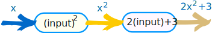
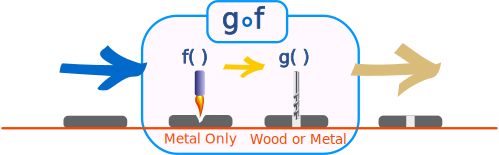

Composition of Functions
"Function Composition" is applying one function to the results of another:
The result of f() is sent through g()
It is written: (g º f)(x)
Which means: g(f(x))
Example: f(x) = 2x+3 and g(x) = x2
"x" is just a placeholder. To avoid confusion let's just call it "input":
f(input) = 2(input)+3
g(input) = (input)2
Let's start:
(g º f)(x) = g(f(x))
First we apply f, then apply g to that result:
(g º f)(x) = (2x+3)2
What if we reverse the order of f and g?
(f º g)(x) = f(g(x))
First we apply g, then apply f to that result:

(f º g)(x) = 2x2+3
We get a different result!
When we reverse the order the result is rarely the same.
So be careful which function comes first.
Symbol
The symbol for composition is a small circle:
(g º f)(x)
It is not a filled in dot: (g · f)(x), as that means multiply.
Composed With Itself
We can even compose a function with itself!
Example: f(x) = 2x+3
(f º f)(x) = f(f(x))
First we apply f, then apply f to that result:
(f º f)(x) = 2(2x+3)+3 = 4x + 9
We should be able to do it without the pretty diagram:
Domains
It has been easy so far, but now we must consider the Domains of the functions.

The domain is the set of all the values that go into a function.
The function must work for all values we give it, so it is up to us to make sure we get the domain correct!
Example: the domain for √x (the square root of x)
We can't have the square root of a negative number (unless we use imaginary numbers, but we aren't), so we must exclude negative numbers:
The Domain of √x is all non-negative Real Numbers
On the Number Line it looks like:
Using set-builder notation it is written:
{ x
 | x ≥ 0}
| x ≥ 0}
Or using interval notation it is:
[0,+∞)
It is important to get the Domain right, or we will get bad results!
Domain of Composite Function
We must get both Domains right (the composed function and the first function used).
When doing, for example, (g º f)(x) = g(f(x)):
- Make sure we get the Domain for f(x) right,
- Then also make sure that g(x) gets the correct Domain
Example: f(x) = √x and g(x) = x2
The Domain of f(x) = √x is all non-negative Real Numbers
The Domain of g(x) = x2 is all the Real Numbers
The composed function is:
Now, "x" normally has the Domain of all Real Numbers ...
... but because it is a composed function we must also consider f(x),
So the Domain is all non-negative Real Numbers
Why Both Domains?
Well, imagine the functions are machines ... the first one melts a hole with a flame (only for metal), the second one drills the hole a little bigger (works on wood or metal):

What we see at the end is a drilled hole, and we may think "that should work for wood or metal". But if we put wood into g º f then the first function f will make a fire and burn everything down! |
So what happens "inside the machine" is important.
De-Composing Function
We can go the other way and break up a function into a composition of other functions.
Example: (x+1/x)2
That function can be made from these two functions:
f(x) = x + 1/x
g(x) = x2
And we get:
This can be useful if the original function is too complicated to work on.
Summary
- "Function Composition" is applying one function to the results of another.
- (g º f)(x) = g(f(x)), first apply f(), then apply g()
- We must also respect the domain of the first function
- Some functions can be de-composed into two (or more) simpler functions.